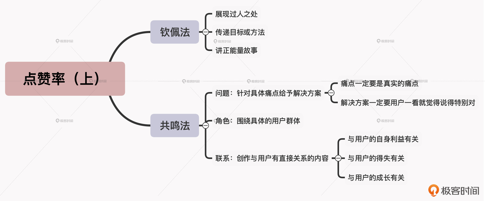

- 00 开篇词 短视频时代下，怎么把握好变现风口？.md.html
- 01 爆款短视频的底层逻辑：用心拍的短视频为啥没人看？.md.html
- 02 爆款短视频的底层逻辑：如何轻松打造自我特色？.md.html
- 03 精益创业法：如何快速跨过从0到1这道坎？.md.html
- 04 SWOT法：这么明显的个人优势你为啥就是看不到？.md.html
- 05 效用函数法：如何用量化的方式进行高效创作？.md.html
- 06 二次创新实验法：如何打造个人的差异化定位？.md.html
- 07 平台定位：如何选择最适合自己的创作平台？.md.html
- 08 如何快速找到各大短视频平台的正确切入点？.md.html
- 09 选题（上）：如何利用思考清单找到合适选题？.md.html
- 10 选题（下）：如何为不同的内容定制合适选题？.md.html
- 11 优劣分析法：如何快速筛选适合创作的视频素材？.md.html
- 12 标题（上）：如何利用微创新巧妙找到爆款标题？.md.html
- 13 标题（下）：如何用对号入座的方式抓住标题亮点？.md.html
- 14 视频封面（上）：如何快速抓住用户注意力？.md.html
- 15 视频封面（下）：如何传递最有价值的信息？.md.html
- 16 视频剪辑：如何轻松掌握视频化剪辑的三大公式？.md.html
- 17 效果反馈法：剪辑很容易，为什么你却一直学不会？.md.html
- 18 剪辑对比（上）：如何避开常见的短视频剪辑陷阱？.md.html
- 19 剪辑对比（下）：如何利用剪辑技巧提升视频质量？.md.html
- 20 拉片法：用电影创作的方式学习爆款短视频运营技巧.md.html
- 21 用户留存率：为什么粉丝很多但忠实拥趸却很少？.md.html
- 22 点赞率（上）：如何有效提升短视频的点赞量？.md.html
- 23 点赞率（下）：三种方法轻松提升用户对内容的认可度.md.html
- 24 上瘾机制：为什么视频观看量很高却没人留言？.md.html
- 25 避坑指南：为什么很多短视频账号中途做不下去了？.md.html
- 26 如何找到适合自己的短视频变现模式？.md.html
- 27 多元化变现：如何明确不同创作阶段的变现任务？.md.html
- 28 多内容变现：不同内容的主打变现模式是什么？.md.html
- 结束语 一切成大事者，都是终身学习者.md.html
- 捐赠
22 点赞率（上）：如何有效提升短视频的点赞量？
你好，我是周维。
在开始今天的课程之前呢，我想先给你讲一个故事。
我之前在工作中认识了一个美妆类内容博主，她的技术很不错，创作的内容每期一般都有十几万的播放量，也出过几个百万播放量的热门作品。不过让她比较苦恼的是，自己作品的点赞量非常得低，很多用户都是匆匆一瞥就将内容划走了。这样时间一长，就导致她的作品被平台推荐的曝光量越来越少，她自己的商业价值无法得到很好地积累和提高。所以到最后，这位博主就失去了创作的信心，虽然她具备着很好的美妆技术，但却选择离开了短视频行业。
你看，点赞这个动作对短视频创作者来说其实非常重要和关键。
首先，从用户的角度来看，点赞代表的是用户对作品的认可、喜爱和支持。点赞量高，创作者也会产生成就感，下一次创作内容时也会更有动力。
其次，从平台的角度来看，点赞其实是一项双向的回馈功能。一方面，平台的算法机制会根据点赞量来判定作品的优劣和曝光量，点赞量高就意味着作品会被推荐到更大更多的流量池当中；另一方面通过点赞的行为，用户也会被推荐更多优质精彩的内容，这对于提升创作者其他作品的播放量也大有益处。
那么也就是说，如果我们能够提升发布作品的点赞量，就能得到平台更多流量的加持，从而也就能提升作品成为爆款的几率。
所以在接下来的两节课当中，我就会给你分享有效提升短视频点赞率的方法和技巧。今天这节课，我们先来看看如何通过钦佩法和共鸣法两种方式，来提升自己作品的点赞量，以此得到平台更多流量的加持。
钦佩法
首先是钦佩法。钦佩这个词我们都理解，就是尊重、敬佩一个人在某个领域内取得的成绩。
那么放到短视频领域，钦佩法就是指创作者通过一些内容创作手段，使得对外传递的内容价值能够得到用户的肯定和喜爱，而且创作者自身所具备的才华、能力可以让用户产生钦佩之情。而这样一来，创作者的作品点赞量就一定会得到提升。
那具体是通过哪些创作手段呢？接下来我就给你具体讲讲。
展现过人之处
第一种是展示自己的过人之处，这种方式其实与我在第1讲中提到的马斯洛原理的尊重需求的底层逻辑类似，它们都是通过展现一些自身独特的能力、优秀的成绩等来获取用户的认可。
我给你举个例子。有位短视频创作者发布了一条“中国骄傲‘马燕红下’，体操神作现已绝迹江湖”的内容，视频中主要记录了在1979年的世锦赛上，年仅16岁的体操运动员马燕红夺取了中国体操史上第一个世界冠军的内容，以及在1981年的世锦赛上，诞生了以她的名字命名的“马燕红下”的体操动作。短短十七秒的视频内容，获得了80多万的点赞，近两万的评论量。
而在点赞行为的背后，其实就是展示了马燕红的过人之处，这种专业技能、过硬本领的展现，会很容易获得用户的青睐与佩服，自然而然就会产生点赞的行为。
请注意，过人之处一定是比别人优秀、超过别人的地方，所以你在创作内容时，只要能够衬托出自身优秀的地方，就要浓墨重彩都地表现出来，这样就更容易获得用户的钦佩。
传递目标或方法
我们知道，内容的本质是为用户提供价值。当用户从短视频内容中得到了一些收获时，其实就会给予点赞。所以，能够在内容创作中传递出有效的目标或者方法，也是非常常见的一种钦佩法的创作手段。
那么什么才是有效的目标或方法呢？简单来说，就是创作者对外传递的知识要有针对性，且包含具体的实施步骤，便于用户复制和套用。否则用户看着觉得有道理，但依然不知从何下手的话，就会自动对接收的信息价值大打折扣，那点赞的行为也就不会出现了。
我给你举个例子。有位母婴类的知识创作者“年糕妈妈”，主打宝宝健康的知识科普，她会从用户关心的问题入手，并且在每次的内容创作中，都会给出具体的操作步骤，方便用户简单上手操作，基本上每期的视频点赞量都很高。
比如说，她有一期内容是针对“孩子流鼻血了该怎么办”，视频一开始，她先指出孩子流鼻血就仰头的做法是错误的，因为这会导致鼻血流进喉管。接着，她指出正确的做法分为三步：第一步，让孩子身体微微前倾，把流出的鼻血排出去；第二步，用纸巾捏住孩子鼻翼10分钟，目的是用来止血；第三步，当血止住之后，24小时以内别让孩子做蹦跳剧烈运动。
你看，围绕具体的问题，先指出错误做法，然后给出正确的操作步骤，方便用户学习。这条短视频内容，也得到了众多用户的喜爱，点赞量也飙升到20万。
讲正能量故事
我们知道，用户都爱看故事，而且往往喜欢看正能量的故事。这是因为正能量的故事背后闪现的都是人性的光辉，或者是平凡生活中感人的点滴小事，这些感人的行为可以触及用户内心最深处的情感，哪怕是普通、平凡之人的举手之劳都能使用户深受感动。
不过这里请注意，在内容中创作或者穿插与正能量有关的故事时，一定要有细节，而非简单一带而过。越是鲜活、越有细节的故事，越能感动用户，越容易赢得用户的喜爱。
我这里给你举个例子。创作者“Qing视频”发布了一条正能量的短视频内容，短短时间内获得了300多万的点赞。内容中，一名男子骑着摩托车将一名女子撞倒在地后，又举起砍刀准备行凶。恰恰这时被路边店里的张大爷看到了，他不容分说，一个箭步冲了上去，制止了一场悲剧的发生。在这条视频中，用户可以从头到尾看到整个故事的开始与结束，每一个细节也都有讲述，让人看完不禁要为张大爷点赞。
以上所说的三个具体的方法，其实就是构成钦佩法的重要组成部分。只有让用户产生佩服、认可、支持的心理，才能带来更多的点赞行为。所以，你在每一次的内容创作中，都可以先问问自己，到底有没有值得让用户钦佩的元素存在，而具体的方法就是可以通过过人之处的展示、目标方法的传递，以及加入正能量的故事获得用户更多的点赞。
好，接下来，我们再说一下另一种可以获得更多用户点赞的方法：共鸣法。
共鸣法
“共鸣”这个词有几层含义，第一层意思是说物体因为共振而发声的现象，第二层意思是指由于别人的某种思想感情引发了自己产生相同的感受。而在这里，“共鸣法”指的就是围绕目标人群需要解决的痛点，给予准确的答疑释惑，以此获得用户的认可、赞同，并产生点赞的行为。
共鸣法也可以分为三种方式进行实践，下面我们就具体来说一下。
问题：针对具体痛点给予解决方案
首先是针对用户的痛点问题给予解决方案。注意，这个痛点一定要是真实的痛点，要能让用户感觉被击中，然后给出的这个解决方案一定要让用户一看就觉得“说得特别对”，让用户感觉特别爽，让用户觉得创作者讲出了自己的心声。
我给你举个例子。情感类的内容创作者“一禅小和尚”，是以人生哲理作为切入点进行创作的，他的内容并不是简单的情感抒发，而是会围绕用户在日常生活中遇到的情感困惑给予解答。
比如，“为什么对一个人越好就越不会被在乎？这是我听过最让人心酸的回答”，这条短视频的点赞量就将近两百万。视频内容主要是通过小和尚与师父之间的对话，展示了创作者对这个问题的理解和回答，从而可以击中用户的内心情绪，瞬间明白了困扰自己的问题根源是什么。这样，创作者围绕具体的问题给予解答，就可以准确帮助用户解决难题，得到用户的点赞。
这里也请注意，具体的问题一定是要来自于大多数用户的真实困扰，并且是一个广泛性的问题。另外，每期视频一定是只针对一个问题解答，而不是多个问题一起解决，这样用户累积的情感也会更加集中。
角色：围绕具体的用户群体
共鸣法的第二种使用方式，就是选择好具体的用户群体，专门针对该类用户做内容。也就是说，创作者站在用户的角度上，来分析用户群体具体的诉求，给出可以帮他们解决问题的答案，就能够提升短视频内容的点赞量。
我举个例子，有一个“车哥测评”的汽车类创作者，他在创作内容时会从买车、用车两大领域进行细分创作。比如说，分享行车时如何避免出现小剐蹭的技巧，还有买车时正确的流程是什么，买车时如何避免踩坑，等等，这样进行专业内容的输出，就获得了很多用户的喜爱。
联系：创作与用户有直接关系的内容
短视频的本质就是注意力经济，用户只会对自己感兴趣的内容停留目光，而平台的机器算法也只会对用户感兴趣的内容给予更多的曝光。所以，我们在使用共鸣法时，还可以采用联系的方式，找到用户感兴趣的内容，这样也可以获得用户的喜爱，给予点赞。
那么具体怎么找到用户感兴趣的内容呢？我认为可以分为三类：与用户的自身利益有关、与用户的得失有关、与用户的成长有关。
我们可以从这三方面入手创作内容，然后在标题上给予明确的提醒或警示，以起到吸引用户注意力的作用。
我举个例子。健身类的创作者“瑜伽笑笑”细分垂直领域，主打的创作方向是减肥人群，围绕这个群体做出了一系列的相关内容，每每都是以跟用户有直接关系的标题、封面、文案辅助内容，传递价值。
比如说，她有一期内容为“上身肥胖，这样练，每天空腹100个，快速帮你瘦上半身”，封面是两个人整齐划一的锻炼场景，因为这期内容指向性强，用户会觉得与自己有关，后续也有超过两百多万的点赞。
不过在这里要敲下黑板了，当你在创作跟用户有直接关系的内容时，可以采用面对朋友诉说的方式，也就是要有目标感，让用户看视频时觉得创作者是在对自己说话；另外，标题文案上你可以使用“你”之类的第二人称代词，这样也可以让用户感觉跟自己有直接关系。
小结
很多时候，我们创作的短视频内容播放量并不低，而点赞量太少，主要原因就是没有为用户传递出内容的价值，让用户看了之后没有收获感。
在这个前提之下，钦佩法与共鸣法可以很好解决这个问题，并且每一个方法都有三种不同的细分方法可以让我们具体去学习、实施。
今天所讲的点赞方法其实适用于大部分的短视频领域的创作，你在创作中，如果想要得到更多用户的点赞，都可以先对号入座看一下，自己的内容中是否有今天所讲的点赞方法中的某个元素，以提高创作的效率。

思考题
这节课讲到点赞的背后，其实是用户对于创作者内容的认可、赞同，那么问题来了，如果我是一个旅行类的短视频创作者，我要在内容中怎么表达这一点呢？欢迎你在留言区分享你的答案。
如果你觉得有收获，也欢迎把今天的内容分享给更多的朋友。感谢你的阅读，我们下一讲再见。
© 2019 - 2023 Liangliang Lee. Powered by gin and hexo-theme-book.